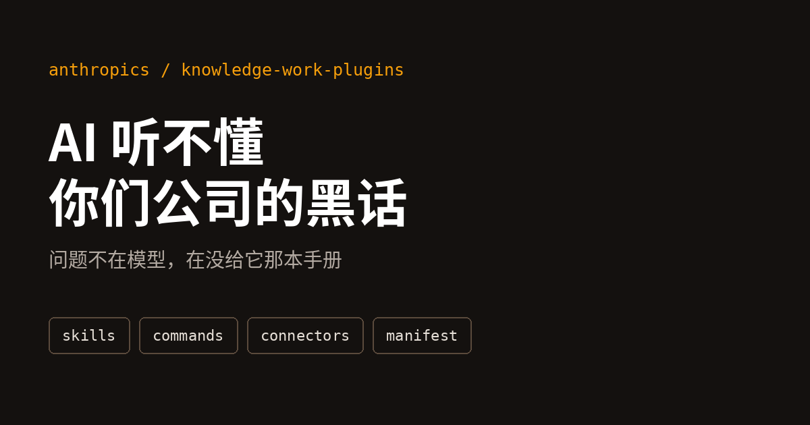
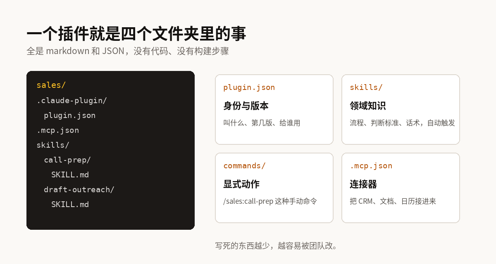
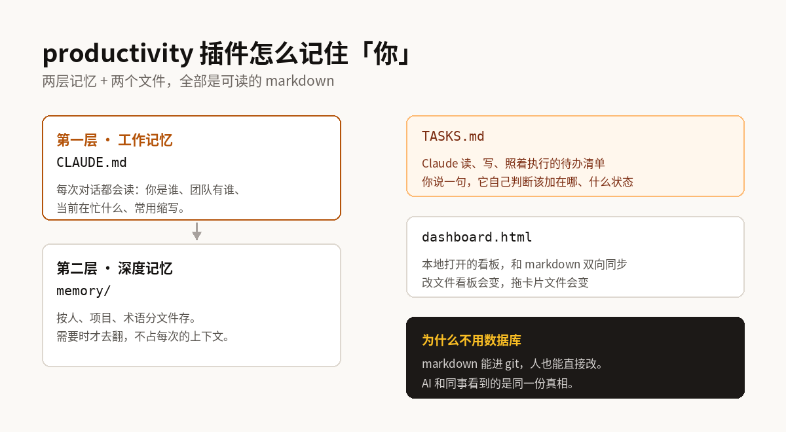

我给一个做销售的朋友演示 Claude 时，他说了一句："ask todd to do the PSR for oracle"。
Claude 答得很认真，也很没用。它不知道 todd 是谁，不知道 PSR 是什么文档，更不知道 oracle 指的是正在跟的那笔 230 万美元的单子。
这不是模型能力问题。你把这句话翻译成完整中文再问，它答得很好。
问题在于：模型知道世界上的一切，唯独不知道你们公司怎么说话、活在哪个系统里、事情该按什么流程办。
Anthropic 开源的 knowledge-work-plugins 就是解决这个的。11 个按岗位划分的插件，把"这个角色该怎么干活"写成文件，连同公司的术语、系统、流程一起喂给 Claude。
插件不是提示词，是岗位说明书
很多人第一反应是"把公司资料丢进知识库不就行了"。不够。
知识库解决的是"信息在哪"，插件解决的是"拿到信息之后怎么处理"。以销售场景为例，同样是"准备见客户"，一个资深销售会做的事是：
· 先看 CRM 里这个客户现在的阶段和金额
· 翻上一次通话记录，找出没被回答的问题
· 查一下最近的邮件和群里有没有新进展
· 翻竞争对手最近有没有发新东西
· 最后按公司的模板出一页 brief，重点写该问的三个问题
这套顺序、这些判断标准、这个模板，才是插件里真正装的东西。
所以我更愿意把它理解成一份可以被执行的岗位说明书：不是告诉 AI "我们公司有什么"，而是告诉它"在我们公司，这件事该这么做"。
拆开看：一个插件只有四样东西

整个仓库 1000 多个文件，全部是 markdown 和 JSON
没有一行代码，没有构建步骤，没有依赖要装。
plugin.json：身份。名字、版本、一句话说明。就 286 字节，productivity 插件的全文。
skills/：领域知识。每个 skill 一个目录，一个 SKILL.md，开头是 YAML（名字 + 什么时候该用），正文是流程。这些是自动触发的——你说"帮我准备明天的会"，它自己判断该用 call-prep。
commands/：显式动作。写成 /sales:call-prep 这样，你手动敲。
.mcp.json：连接器。把 Slack、Notion、Salesforce 这些系统通过 MCP 接进来。这是唯一涉及"外部世界"的部分。
我翻了几份 SKILL.md，有个细节挺有意思：sales 的 call-prep 开头不是流程，而是一段"规则"。
不要虚构字段名，以 CRM 实际 schema 为准；每个引用的值都要能链回原记录；用户没让你改的东西，展示出来让他自己决定。
这类规则比流程重要。流程决定它做得好不好，规则决定它会不会闯祸。
装起来：两行命令
两个入口。用 Cowork（Anthropic 的桌面端）的，直接在 claude.com/plugins 里点安装。
用 Claude Code 的，两行：
claude plugin marketplace add anthropics/knowledge-work-plugins
claude plugin install sales@knowledge-work-plugins
第一行是加市场（把仓库索引拉下来），第二行才装具体插件。
装完不用做任何配置，插件自动生效：skill 在该触发时触发，命令在当前会话里就能用。
唯一需要动手的是连接器授权。首次调用某个系统时，它会让你 OAuth 登录一次。比如 productivity 插件里配了 Slack、Notion、Asana、Linear、Jira 等七八个，用到哪个授权哪个，不用全开。
这里建议一开始只装一个。装三个角色插件再加十个连接器，Claude 光在"我该用哪个 skill"上就会犹豫，你也会被各种权限弹窗烦到。
11 个插件，分别管什么
| 插件 | 解决的问题 |
| productivity | 任务、日历、职场记忆：少重复解释自己 |
| sales | 客户调研、电话准备、pipeline 复盘、外联草稿、竞品战卡 |
| customer-support | 工单分级、回复草稿、升级打包、把已解决的转成知识库 |
| product-management | 写 spec、排路线图、汇总调研、同步干系人 |
| marketing | 内容、campaign、品牌语气约束、竞品简报、渠道复盘 |
| legal | 合同审阅、NDA 分级、合规导航、风险判断 |
| finance | 分录、对账、报表、差异分析、月结、审计支持 |
| data | 写 SQL、统计分析、搭看板、分享前自检 |
| enterprise-search | 一个查询跨邮件、聊天、文档、wiki |
| bio-research | 文献检索、基因组分析、靶点优先级 |
| plugin-management | 造新插件、改现有插件，给没覆盖的角色用 |
最后那个 plugin-management 值得单说。它本身不解决业务问题，但它能帮你把"我们公司特有的一套流程"写成插件——这是整套东西从"能用"到"好用"的分水岭。
另外，bio-research 是个信号。它接的是 PubMed、ChEMBL、ClinicalTrials.gov、Benchling 这类专业库，说明 Anthropic 想做的不是通用助手套壳，而是真的按行业往里钻。
最能说明设计思路的，是 productivity

两层记忆，四个文件，全部可读可改
它的记忆分成两层，这个设计很实用。
CLAUDE.md 是工作记忆：你是谁、团队有谁、当前优先级、常用缩写。内容短，每次对话都会读。
memory/ 是深度记忆：按人、项目、术语分文件。内容长，需要时才去翻。
为什么要分两层？因为上下文窗口是有限的预算。把所有资料塞进每一次对话，等于每次都从头读一遍公司史。分成两层之后，日常对话只花几百 token 的"索引"，真需要细节再去查具体文件。
这跟 SKILL.md 的"渐进式披露"是同一个思路：主文件保持精简，细节拆到 references 里按需加载。
配套的还有两个文件。TASKS.md 是待办清单，Claude 读、写、照着执行；dashboard.html 是本地看板，跟 markdown 双向同步——你拖卡片，文件会变；你改文件，看板也会变。
全是 markdown 和 HTML，不用数据库，不用同步服务。
这个选择的理由很实在：markdown 能进 git，人也能直接改，AI 和同事看到的是同一份东西。换成数据库，你就得先做一个界面，然后才是同步，然后是权限——一个任务管理插件会长成一个内部系统。
真正值钱的是改，不是装
README 里有一句话说得挺直白：这些插件只是通用的起点，真正有用是在你按公司实际情况改过之后。
一、换连接器。改 .mcp.json，把 Salesforce 换成你们自建的 CRM，把 Notion 换成本地 wiki。这一步是接线。
二、灌公司语境。把内部术语、组织架构、审批流程写进 skill 文件。同事说"走一下 T2 流程"，AI 得知道 T2 是什么、找谁签、卡在哪一步。
三、改流程。把教材里的标准做法，换成你们团队实际的做法。哪怕你们的做法"不规范"——AI 该学的是你们真实的流程，不是教科书。
四、造新的。用 plugin-management 插件，把没被覆盖的岗位写成新插件。市场准入、供应链、招聘，都是空白。
这四步里，第一步是技术活，后面三步是业务活。而后面三步才是决定成败的部分。
一个团队如果只是装完就用，得到的回答会"很专业但很通用"；把术语和流程灌进去之后，才能得到"这就是我们公司那个人说的话"。
三个要提前想清楚的问题
权限不在插件里，在连接器里。
SKILL.md 里那句规则写得很明确：权限归各连接器自己管（每个工具可以设允许、询问、阻止），插件不额外加限制，也不替你拒绝你明确要求的事。
意思是：你给 Slack 连接器的读写权限，Claude 就能读你所有频道。"插件会不会乱来"这个问题，答案在连接器的授权页面上，不在插件文件里。
数据会出网。
所有连接器都是云端 MCP，客户信息、合同、财务数据都会被送到对应服务商和模型。法务和合规如果对这一点没有明确结论，先别急着全公司推。
这也是为什么它更适合"个人先用起来"——一个人管好自己的授权范围，风险可控；全员铺开之前，得先把数据边界谈清楚。
它不是自动化工具。
它不会帮你定时跑批、不会在后台盯着 pipeline 变化。每一次都是你在会话里发起，它在会话里完成。想做成自动化，得自己在外面套一层调度。
反过来看，这也是它的安全边界：所有动作都由人发起，AI 只在一次会话的生命周期里工作。
一个可以照抄的落地顺序
如果你打算在团队里试，我建议这个顺序：
第一周：一个人装 productivity，把团队人名、项目代号、常用缩写填进 CLAUDE.md。先用一周，感受"AI 记得住上下文"是什么体验。
第二周：换成你们业务最痛的那个角色（通常是销售或客服），装上对应插件，接一个最核心的系统。看它出的东西能不能直接用。
第三周：把上一周你觉得"不对味"的地方改掉。这一步最花时间，也最值钱。
之后：把改好的插件提交到团队仓库，让同事用同一份。从"我知道怎么问"变成"我们都会这么问"。
模型的通用能力，
已经够用了。
缺的是你公司那本手册。
这套插件最值得抄的不是那 11 个目录，而是它的组织形式：把岗位知识写成文件，用 git 管理，让人和 AI 读同一份。
这件事的投入产出比，在很长一段时间里都会高于换一个更强的模型。
相关链接
· 仓库：github.com/anthropics/knowledge-work-plugins
· Cowork：claude.com/product/cowork
· 插件市场：claude.com/plugins
· 许可：Apache-2.0